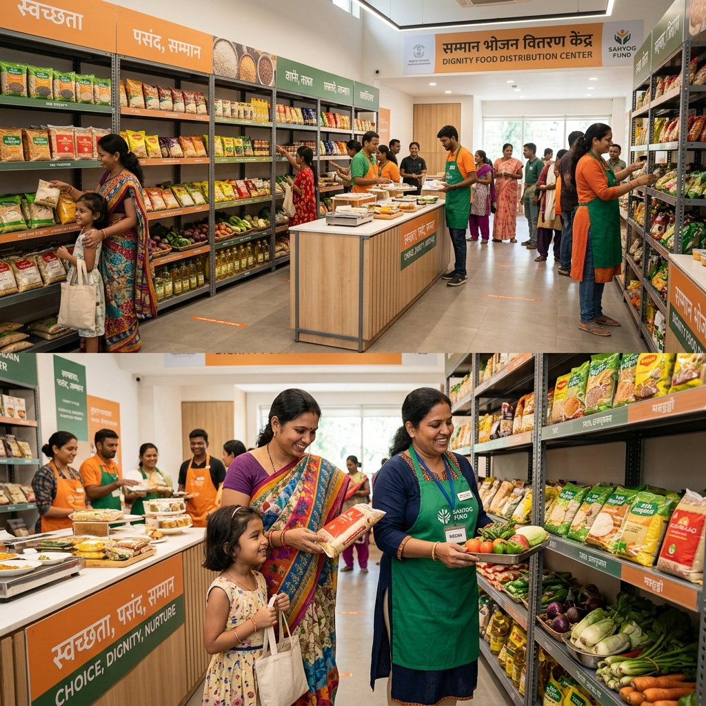

We believe no one should go hungry, and no one should feel less than human for needing a meal. This is our mission, our story, and our commitment.
Annapurna Connect was founded on a simple but radical idea: that hunger and food waste are two sides of the same broken system. India wastes 68.7 million tonnes of food every year while 194 million people go to bed hungry each night.
But we don't believe in charity. We believe in dignity. Our platform enables a fair exchange — where people can access surplus food at nominal prices (₹1 per roti, ₹2 per plate), preserving self-respect while solving food waste.
Technology — location matching, real-time alerts, volunteer routing — is the engine. But dignity is the soul.
Join Our Mission →
Two crises exist simultaneously. Both have the same solution.
The food being wasted today could feed every hungry Indian. The technology to connect them exists. What was missing was a platform — with dignity at its core. That's Annapurna Connect.
See Our Impact →"It was a Tuesday evening in Bengaluru. We'd just finished a large corporate event — hundreds of plates of untouched biryani, chaat, and sweets left over. The caterer said they'd throw it away. Meanwhile, 200 meters away, families were queueing at a shelter. That disconnect broke something in me. I knew technology could fix it."
Annapurna Connect launched in 2022 with three volunteers, one WhatsApp group, and a simple Google Form. In the first week, we redirected 340 kg of food from a wedding venue to 280 families. The response was overwhelming.
What began as a weekend passion project grew into a full-fledged platform — with a mobile-first tech stack, real-time location matching, volunteer management, and a trust-first verification system for both donors and receivers.
Today, we operate in 38 cities, have 12,400+ verified donors, and have facilitated over 847,000 meals — all with dignity at the center of every transaction.
Every person deserves to access food without shame. Our nominal pricing model ensures self-respect is never compromised.
Monthly public impact reports, open financial disclosures, and verified donor and receiver profiles — trust through transparency.
We're not an app — we're a movement. Every volunteer, donor, and receiver is a co-creator of a hunger-free India.
Reducing food waste is reducing CO₂ emissions. Every meal we save prevents food from rotting in landfills and releasing methane.
Meet the team behind India's most human-centered food tech platform.